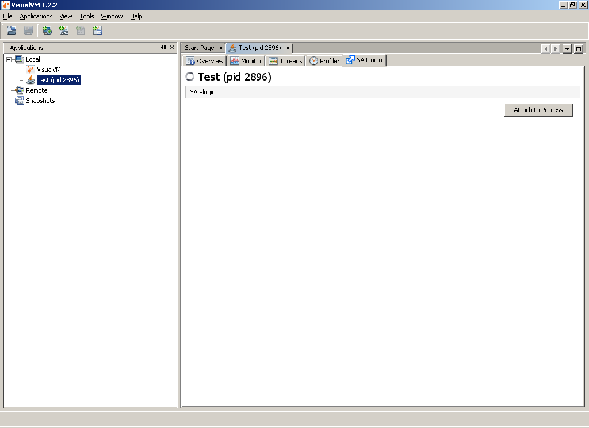
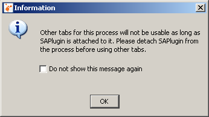
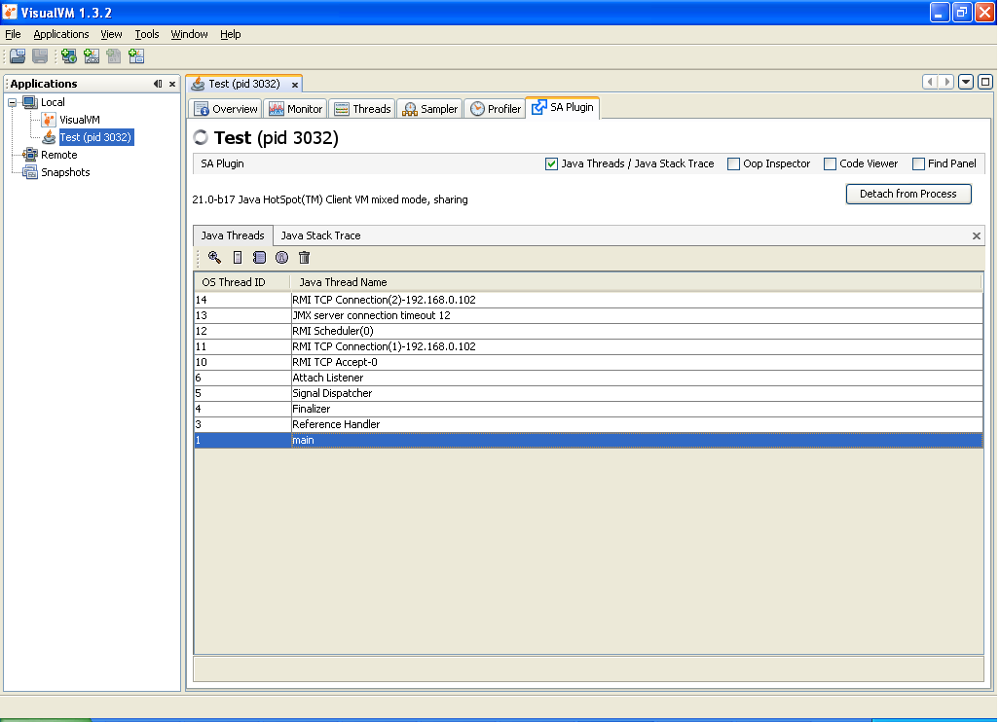
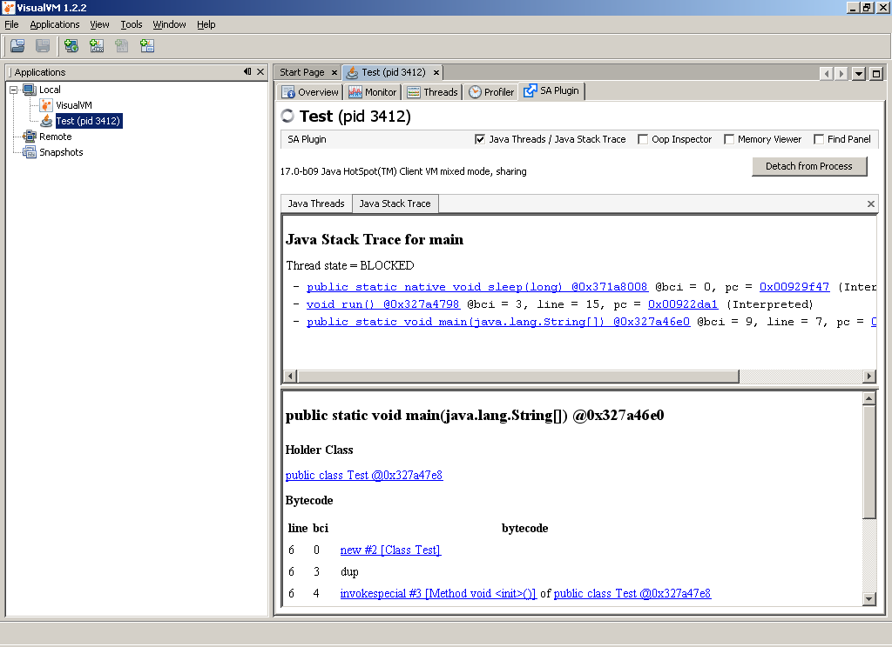
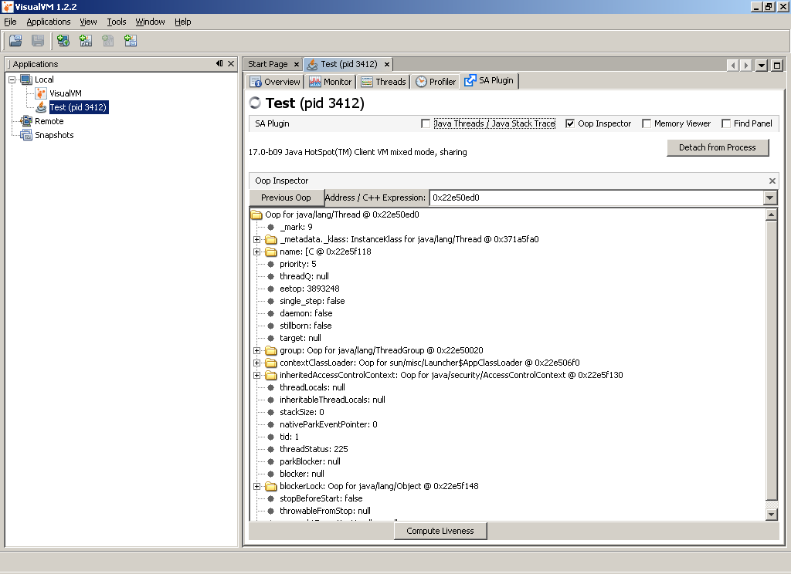
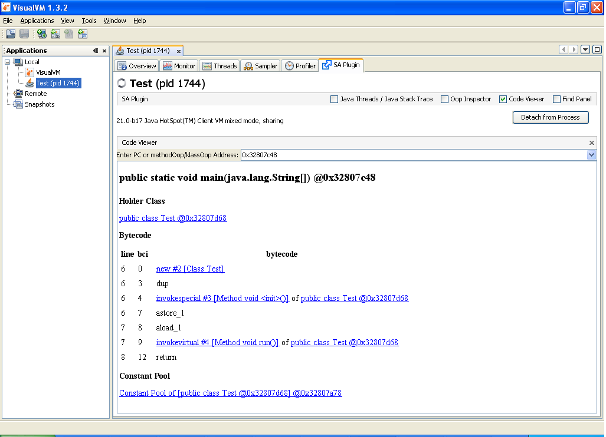
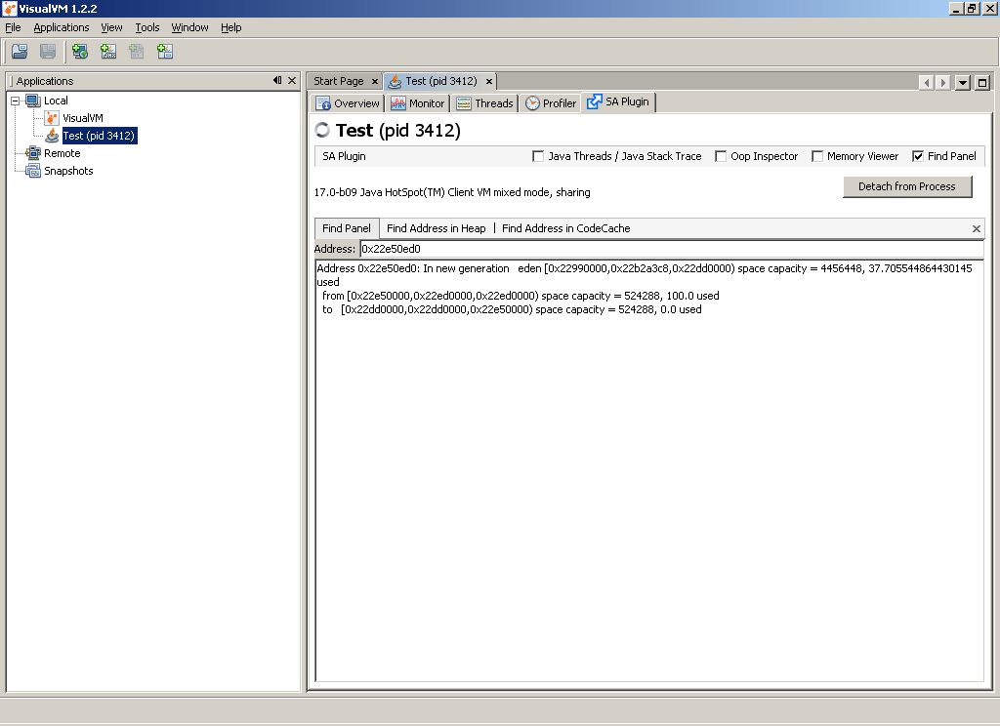

SA-Plugin for VisualVM
SA Plugin makes Serviceability Agent's features and utilities available in VisualVM. Serviceability Agent is an out-of-process snapshot debugger for Hotspot Java Virtual Machine. It can be used to explore Java Objects and Hotspot Data Structures in running processes as well as core files. More details here:
http://www.usenix.org/events/jvm01/full_papers/russell/russell_html/index.html
SA-Plugin brings those powerful features of Serviceability Agent to VisualVM - All-in-One Java Troubleshooting Tool. This Plugin makes SA utilities available in the following four panels in VisualVM:
Java Threads / Java Stack Trace:
-
It shows all the Java Threads in the process.
- Double click on any thread or clicking on the 'Open Inspector' icon on Java Threads Panel shows internal details of the thread object in another 'Oop Inspector' panel.
- Clicking on the 'Show Stack Trace' icon on Java Threads Panel shows thread's stack trace.
Oop Inspector:
- All the java objects in hotspot VM are represented as Oops - 'Ordinary Object Pointer'. The 'Oop Inspector' panel shows details of Oops. The ability to see all the internal fields of any java object provides a great debugging help.
- This also provides the ability to 'compute the liveness' of any Oop in the Java Heap.
Memory Viewer:
- Shows values at any address in the Java Heap
Find Panel:
- Find Address in Heap: Shows where all the given address is assessed in Java Heap
- Find Address in CodeCache : Shows where all the given address is assessed in Compiler's codecache.
- Find Pointer: Find where a pointer lies in Java Heap. e.g
Address 0x10100088: In new generation eden [0x10010000,0x1001e950,0x100f0000) space capacity = 917504, 6.509835379464286 used
from [0x10100000,0x10110000,0x10110000) space capacity = 65536, 100.0 used
to [0x100f0000,0x100f0000,0x10100000) space capacity = 65536, 0.0 used
How to install SAPlugin:
- In VisualVM main menu choose Tools | Plugins, Plugins dialog is opened.
- Switch to Available Plugins tab and select SAPlugin.
- Click the Install button, review and accept SAPlugin license and wait for the plugin to be downloaded and installed.
How to use it
- Start the process that needs to explored with SAPlugin using JDK that has the SA binaries.
e.g. on Solaris-Sparc sa-jdi.jar and libsaproc.so should be present in lib/ and jre/lib/sparc/
folders respectively.
- Double click the process in VisualVM. With SAPlugin installed, 'SA Plugin' tab will also appear in VisualVM.
- In 'SA Plugin' tab, click on 'Attach to Process'. This will attach serviceability agent to the process and will bring up 'Java Threads Panel' and also other three panels in hidden mode. Please note that this might take few seconds.

- Other tabs for the attached process will not be usable as long as SA Plugin is attached to the process, so one needs to detach SA Plugin from the process before using it's other tabs in VisualVM. When SA Plugin gets attached to the process, a message box is shown with this information.

- Now, one can look at Java Threads, their stack traces, look at any Oop, search any address in heap and look at disassembly at any address etc.
- Click on 'Detach from Process' to detach it from the process.
SAPlugin also works with core dumps in VisualVM.
JDK versions supported
- 1.7.0-b64 and later on all platforms.
- 6u17 and later on Solaris and Linux (because SA binaries are not shipped with jdk6 on Windows)
Java Threads

Java Stack Trace

Oop Inspector

Memory Viewer

Find Address Panel
